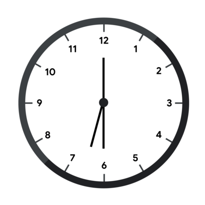
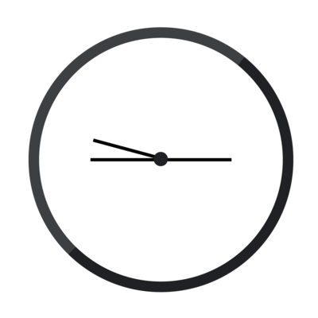
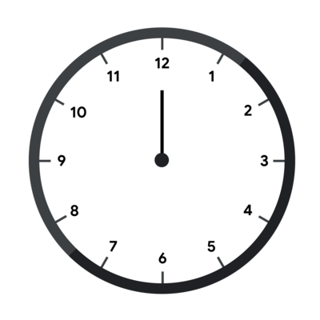
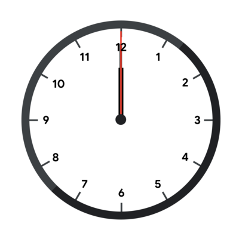
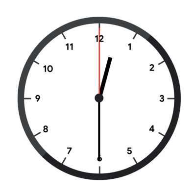
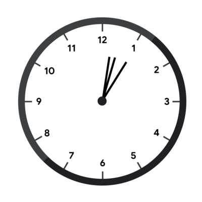
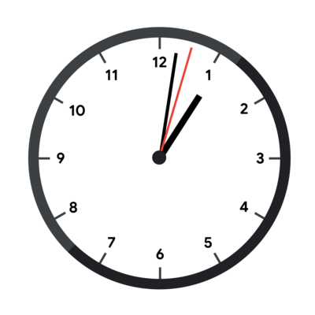
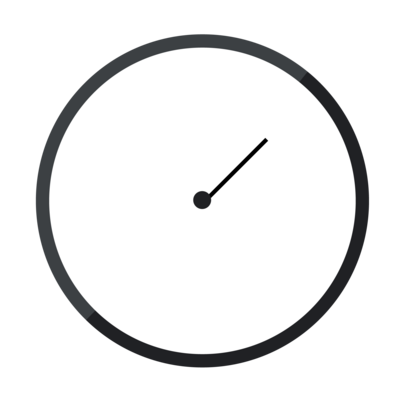
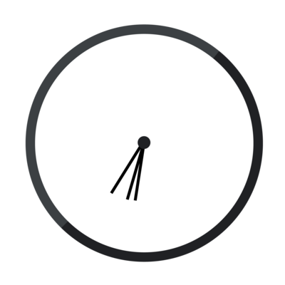

Code Jam 2021 - Round 1B
Broken Clock
Problem
Emmett found an old clock in his attic. The clock is a circle with 3 hands that attach to the center and rotate clockwise at constant speeds. They are called the hours hand, the minutes hand and the seconds hand. At midnight, all hands point up. The hours hand completes a full revolution in $$$12$$$ hours, the minutes hand completes a full revolution in $$$1$$$ hour, and the seconds hand completes a full revolution in $$$1$$$ minute. $$$1$$$ hour is equal to $$$60$$$ minutes, $$$1$$$ minute is equal to $$$60$$$ seconds, and $$$1$$$ second is equal to $$$10^9$$$ nanoseconds.
For example, the clock depicted below is showing that the time is exactly $$$6$$$ hours and $$$30$$$ minutes after midnight. The hours hand (short black) is halfway between $$$6$$$ and $$$7$$$ (completed $$$6.5/12$$$ of a revolution), the minutes hand (long black) is pointing straight down because it has completed exactly $$$6$$$ and a half full revolutions and the seconds hand (red) is pointing straight up because it has completed an integer number of full revolutions.

Unfortunately, the hands are broken, so they all look identical and there is no way to know which hand is which. The clock in the picture above, with its hands broken, would look like this.

In addition, no markings remain that allow Emmett to know which way is up, so any rotation of the clock could be the correct one (the clock can only be rotated, not reflected). To continue with our example, the fully broken clock could look like this.

Emmett does know that the time was strictly before noon, that is, strictly less than $$$12$$$ hours after midnight. Emmett has taken a picture of the clock. Given that picture (represented by the angles of the hands relative to a single arbitrary axis), figure out what time it could correspond to.
Notice that Emmett has already figured out a viable orientation of the clock in some cases (Test Set 1) and has managed to narrow down the possible times to a whole integer number of seconds (Test Sets 1 and 2) or nanoseconds (Test Set 3). Please see the limits sections for more details.
Input
The first line of the input gives the number of test cases, $$$\mathbf{T}$$$. $$$\mathbf{T}$$$ lines follow. Each line describes a test case and contains three integers $$$\mathbf{A}$$$, $$$\mathbf{B}$$$, and $$$\mathbf{C}$$$: the angles of each hand, relative to an arbitrary axis and given in ticks in the clockwise direction. $$$1$$$ tick is equal to $$$1/12 \times 10^{-10}$$$ degrees. This means that the hours hand rotates exactly $$$1$$$ tick each nanosecond, the minutes hand rotates exactly $$$12$$$ ticks each nanosecond and the seconds hand rotates exactly $$$720$$$ ticks each nanosecond.
Output
For each test case, output one line containing
Case #$$$x$$$: $$$h$$$ $$$m$$$ $$$s$$$ $$$n$$$,
where $$$x$$$ is the test case number (starting from 1) and
$$$h$$$, $$$m$$$, $$$s$$$, and $$$n$$$ are integers: $$$h$$$ is the number of full hours since
midnight (between $$$0$$$ and $$$11$$$, inclusive),
$$$m$$$ is the number of full minutes since the last full hour (between $$$0$$$ and $$$59$$$,
inclusive), $$$s$$$ is the number of full seconds since the last full minute (between $$$0$$$
and $$$59$$$, inclusive) and $$$n$$$ is the number of full nanoseconds since the
last full second (between $$$0$$$ and $$$10^9-1$$$, inclusive).
Limits
Time limit: 30 seconds.
Memory limit: 1 GB.
$$$1 \le \mathbf{T} \le 100$$$.
$$$0 \le \mathbf{A} \le \mathbf{B} \le \mathbf{C} \lt 360 \times 12 \times 10^{10}$$$.
Test Set 1 (Visible Verdict)
There is a time $$$t$$$ that corresponds to the input such that:
- $$$t$$$ is an integer number of seconds after midnight.
- $$$t$$$ can be read from the input clock without rotating it.
Test Set 2 (Visible Verdict)
There is a time that corresponds to the input and is an integer number of seconds after midnight.
Test Set 3 (Visible Verdict)
There is a time that corresponds to the input and is an integer number of nanoseconds after midnight.
Sample
Note: there are additional samples that are not run on submissions down below.3 0 0 0 0 21600000000000 23400000000000 1476000000000 2160000000000 3723000000000
Case #1: 0 0 0 0 Case #2: 6 30 0 0 Case #3: 1 2 3 0
In Sample Case #1, all hands point up (as in the first picture below) which happens only exactly at midnight (as in the second picture below).
 
Sample Case #2 is the one pictured in the main part of the statement. The angles of the hands in degrees are $$$0$$$, $$$180$$$ and $$$195$$$. These angles can correspond to $$$6$$$h $$$30$$$m $$$0$$$s without rotating the clock, as the pictures in the main part of the statement show. Notice however, that at $$$0$$$h $$$30$$$m $$$0$$$s (pictured below), the clock looks the same but rotated 180 degrees.

Even in Test Set 1, $$$0$$$h $$$30$$$m $$$0$$$s would be a valid answer. The limit only says that there is one valid time that does not require rotating the clock, but times that work with rotation are also valid answers.
In Sample Case #3, the input represents the clock in the first picture below and the given output happens when interpreting the clock as in the second picture below.
 
Additional Sample - Test Set 2
The following additional sample fits the limits of Test Set 2. It will not be run against your submitted solutions.3 5400000000000 5400000000000 5400000000000 10800000000000 32400000000000 34200000000000 23076000000000 23760000000000 25323000000000
Case #1: 0 0 0 0 Case #2: 0 30 0 0 Case #3: 1 2 3 0
Sample Cases in this test set are the same as in the previous one, but the clock is rotated by $$$45$$$, $$$90$$$, and $$$180$$$ degrees clockwise respectively, as shown below.
 
Additional Sample - Test Set 3
The following additional sample fits the limits of Test Set 3. It will not be run against your submitted solutions.1 0 11 719
Case #1: 0 0 0 1
As explained above, $$$1$$$ nanosecond after midnight the hands are moved by $$$1$$$, $$$12$$$, and $$$720$$$ ticks, respectively. If the clock is also rotated counter-clockwise by $$$1$$$ tick, the hand angles are exactly the ones given in the input.